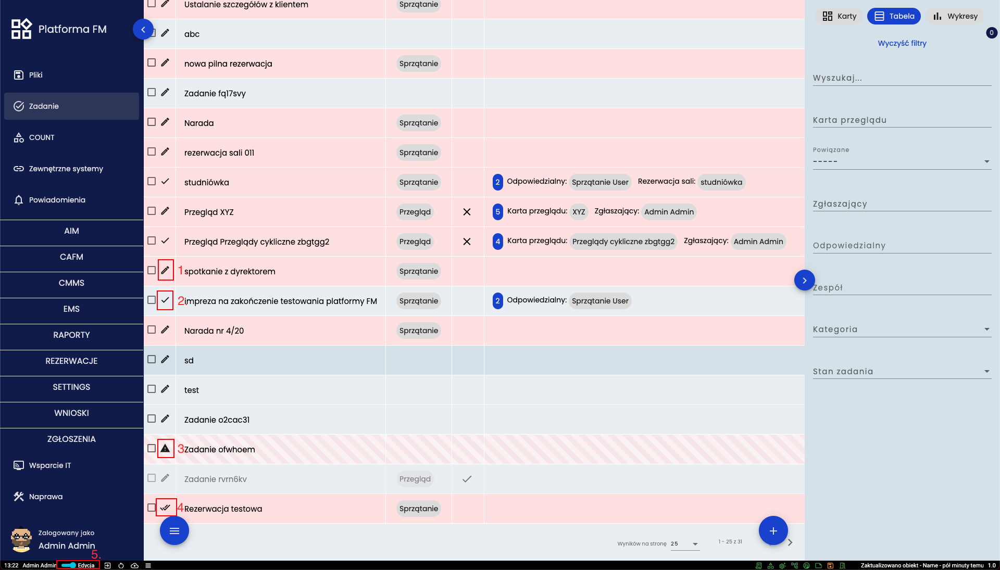

Definicja
Typy definicji i automatycznie tworzone pola
- PLAIN - pusta definicja
- TASKS - pola Name, Start, End i Done
- RECURRENT_TASKS - pola Name, Start, Repeat i Duration
- NOTIFICATION - pola Title, Date, Level, Description i Hidden
- TREE -
- USER - pola First name, Last name, Active Directory, External ID, Email, Password
- LOCATION - pole Location
- CANVAS -
- IFC - pole IFC
- ROLE - pole Name
- PRIVILEGE - pola Definition i Scope
- RESERVATIONS - pola Name, Start i End
Dodatkowo definicja może być hierarchiczna co oznacza, że do obiektu można stworzyć jego "podobiekt".
Panel definicji

- (1.) Miejsce wyboru ikony definicji
- (2.) Miejsce wprowadzenia nazwy definicji
- (3.) Miejsce wyboru typu definicji
- (4.) Miejsce wprowadzenia nazwy grupy definicji
- (5.) Miejsce włączenia typu hierarchicznego
- (6.) Przycisk usuwający definicję
- (7.) Miejsce wyboru dodatkowych pól definicji
Pola

Ekran pól dzieli się na cztery części. Na samej górze są POLA WYRÓŻNIONE. Pola będące w tym miejscu będą widoczne w tabeli oraz na kartach danego obiektu. Poniżej jest miejsce na pozostałe pola widoczne po wejściu w szczegóły obiektu. Kolejna część odpowiada za relacje. Definicja wybrana na tej karcie pojawi się przy tworzeniu/edycji obiektu jako pole. Na samym dole pokazane są relację powiązane, czyli takie gdzie dana definicja jest polem w innej definicji.
Kolejność pól
Pola wyświetlane są w kolejności od lewej do prawej, z góry do dołu. Kolejność można zmienić kllikając i przeciągając kartę z danym polem w inne miejsce lub poprzez wpisanie liczby w prawym górym rogu karty. Karty z wartością ujemną będą wyróżnione. Im większa wartość ujemna ty wyżej pole będzie na karcie. Im wyższa wartość dodatnia tym niżej pole będzie usytuowane w danym obiekcie.
Opcje pól
Is hidden - czy pole ma być ukrytę. Po wybraniu tej opcji zobaczyć je będzie mógł tylko użytkownik posiadający uprawnienie do podglądu ukrytych pól.
Is name field - czy pole ma być nazwą obiektu. Jeśli ta opcja zostanie wybrana dla tylko jednego pola to nie będzie ono widoczne w tabeli/na karcie, ponieważ pojawi się jako nazwa całego obiektu.
Is read only - czy pole ma być w trybie tylko do odczytu.
Is required - czy pole ma być obowiązkowe. Po wybraniu tej opcji nie będzie można zapisać obiektu bez uzupełnienia tego pola.
Status obiektu

Obiekty mogą mieć różne statusy. Status DRAFT (1.) i INVALID (3.) są zawsze w trybie edycji. Tryb obiektu przy statusie SAVED (2.) zależy jest od przełącznika edycji (5.). Przy statusie CLOSED (4.) edycja jest wyłączona i dane można tylko odczytać.